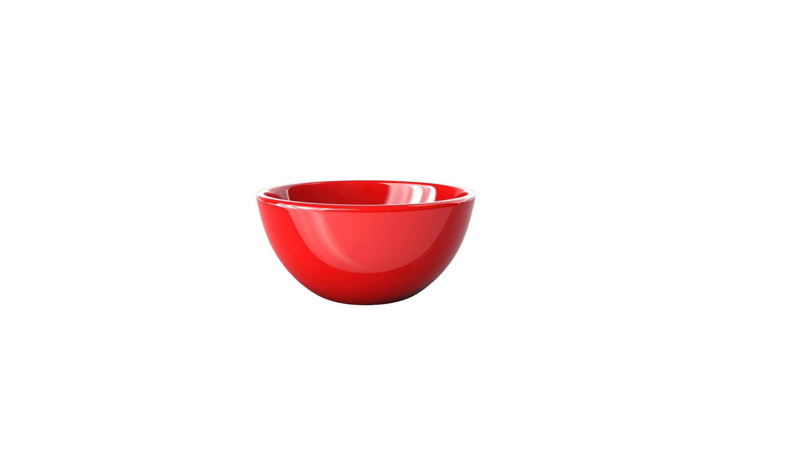

Pavê de Bis
Ingredientes
- Para o creme:
- 1 lata de leite condensado
- 1 e 1/2 lata de leite (use a lata de leite condensado para medir)
- 2 gemas
- 1 colher de sopa de amido de milho
- 1 colher de sopa de chocolate em pó 50% cacau
Para a montagem:- 2 caixas de biscoito "Bis" (ao leite ou branco)
- 1 lata de creme de leite gelado sem soro
Utensílios

Panela

Tigela
Travessa de Vidro

Batedor de Arame
Ao clicar em comprar você será redirecionado para o site da Amazon.com.br
Modo de Preparo
- Para o Creme: Em uma panela, misture o leite condensado, as gemas, o amido de milho dissolvido no leite e o chocolate em pó.
- Leve ao fogo baixo, mexendo sempre, até a mistura engrossar. Retire do fogo e reserve.
- Para a Montagem: Na travessa, faça uma camada com parte do creme.
- Cubra o creme com os biscoitos "Bis" inteiros, lado a lado.
- Despeje o restante do creme por cima dos biscoitos, cobrindo tudo.
- Finalize com o creme de leite gelado e leve à geladeira por no mínimo 4 horas, ou até que esteja bem gelado e firme.
- Decore com mais "Bis" picados ou raspas de chocolate antes de servir.
- Bom apetite!